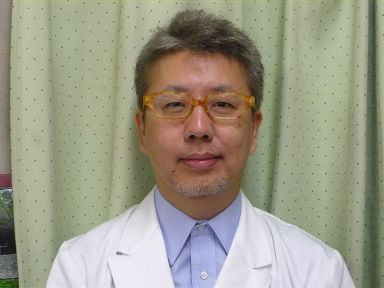
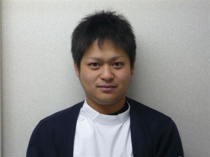
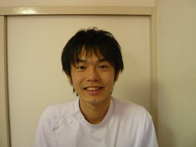

院長・スタッフ紹介
院長

内田 六郎
整形外科医
- 日本整形外科学会専門医
- 日本整形外科認定スポーツ医
- 日体協公認スポーツドクター
- 日本医師会認定健康スポーツ医
- 九州サッカー協会 医学委員会 委員長
- 別府市サッカー協会 医学委員会 委員長
- 大分県陸上競技「チーム大分」メンバー
活動実績
数多くのプロスポーツ競技の会場ドクターを経験。JFLヴェルスパ大分のメディカルフォロー、大分県陸上競技の国体選手のメディカルフォローを担当。
スポーツ履歴
サッカー（別府シニアサッカー現役選手）、陸上、テニス、水泳、自転車（ロード）など多種目。
スタッフ

森山 浩次
理学療法士
- 大分県サッカー協会 スポーツ医学委員会 委員
スポーツ履歴
野球、サッカー 他

村上 雄大
- 大分県サッカー協会 スポーツ医学委員会 委員
- 大分ヒートデビルズ スクールコーチ
その他スタッフ構成：理学療法士 3〜4名／鍼灸マッサージ師 1名／看護師 2名／放射線技師 1名／事務 5名（体制は変動することがあります。最新の人員体制はお電話にてご確認ください）。
整形外科専門医について
（日本整形外科学会発行の患者様向けパンフレットより）
整形外科専門医は、運動器の病気やケガを治療し、健康を守る専門家です。運動器とは骨、靭帯、筋肉、脊椎脊髄、手足の神経・血管などをひとまとめにした呼び方です。整形外科専門医は、常に最新の医学を取り入れ、質の高い医療を皆様に提供するように努めています。
手、足や背骨などの身体に痛みがある場合や、ケガをした時には、早い機会に、整形外科専門医の正しい診察と治療を受けましょう。
主な診療対象
- 骨折や捻挫などの外傷（上肢、下肢や体幹部の骨折、捻挫など）
- 関節の病気・リウマチ（股関節、膝関節、足関節、肩関節、肘関節、手関節などの加齢性の関節症、リウマチや外傷など）